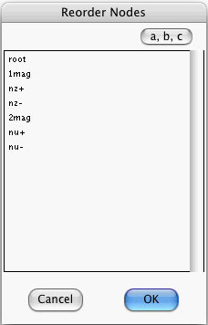

The Reorder Icon appears at 3 different places within the Node Prior-Info. window.
In all 3 cases, clicking on the Reorder Icon opens a similar dialog window. Thus, we will only discuss the dialog for case 1:

This dialog lists the nodes of the Kindergarten Net considered in Part II of this manual.
You can select an item of the list and then drag it to a new position.
If you press the (a,b,c) button, the list is ordered alphabetically.
When you dismiss the above window by pressing OK, the order of items in the node popup becomes the same as that exhibited by the above window.
When you dismiss the above window by pressing Cancel, the order of items in the node popup remains the same as it was immediately before you summoned the above window.
Tip: Suppose you have a long list of numbers that you wish to order numerically. Take the numbers 12, 7 and 1, for example. Not a long list, but this is only for illustration purposes. The (a,b,c) button will order this list thus 1, 12, 7 (alphabetically) instead of thus 1, 7, 12 (numerically). Note, however, that if you write your numbers with zero placeholders: 01, 07, 12, then the (a,b,c) button can accomplish the task of ordering the numbers numerically. Indeed, with zero placeholders, the numeric and alphabetic orders are the same: 01, 07, 12.